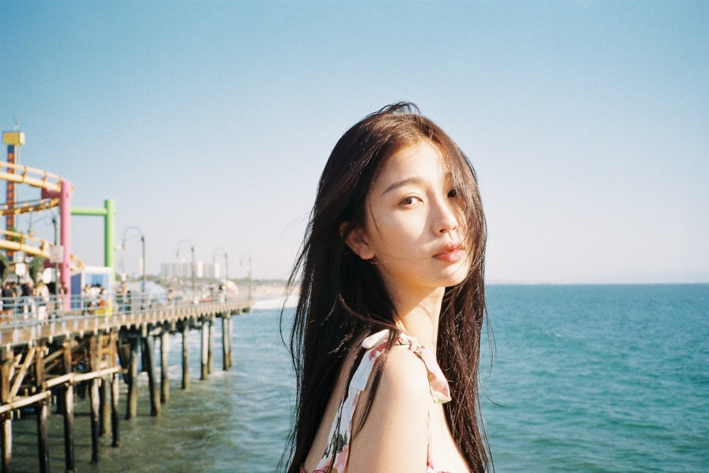

虞书欣

基本信息
- 性别：女
- 年龄：29岁
- 身高：169cm
- 体重：50kg
- 代表作品：苍兰诀、永夜星河、云之羽、月光变奏曲、下一站是幸福
获奖记录
| 获奖时间 |
获奖名称 |
| 2025-1-11 |
2024微博之夜微博年度号召力演员 |
| 2025-1-4 |
2024腾讯视频星光大赏年度最具海外影响力艺人 |
| 2025-1-4 |
2024腾讯视频星光大赏年度最具人气电视剧演员 |
| 2025-1 |
2024腾讯视频星光大赏腾讯视频VIP之星 |
| 2024-12-7 |
2024爱奇艺尖叫之夜亚太年度全能艺人 |
| 2024-11-5 |
2024微博视界大会微光荣耀年度表现力演员 |
| 2024-1-13 |
2023微博之夜微博年度热度演员 |
| 2023-11-25 |
2023爱奇艺尖叫之夜戏剧单元年度影响力女演员 |
| 2023-3-25 |
2022微博之夜微博年度瞩目演员 |
| 2020-10-20 |
第七届中国电视好演员奖网剧女演员组别优秀演员奖 |
主要作品
- 《嘘，国王在冬眠》饰演卫枝
- 《永夜星河》饰演林妙妙
- 《双轨》饰演姜暮
- 《云之羽》饰演云为衫
- 《苍兰诀》饰演小兰花
- 《月光变奏曲》饰演初礼
- 《两个人的小森林》饰演虞美人
form作业
school website作业